*Equal contribution ·
Japan Advanced Institute of Science and Technology (JAIST)
{ndhien, lnkhang, nguyenml}@jaist.ac.jp
Abstract
Large Language Models (LLMs) demonstrate strong multilingual capabilities but are costly to deploy due to their size and computational demands. To mitigate this, compression techniques such as pruning and quantization are widely used. However, these methods face two key limitations: (1) they assume access to high-quality instruction or calibration data, which is often unavailable for low-resource languages; and (2) they aim to preserve multilingual generality, making them inefficient for language-specific applications.
We introduce LangCompress, a language-aware compression framework that enhances existing compression methods for targeted deployment. LangCompress is method-agnostic and improves state-of-the-art pruning and quantization approaches through two core components: an iterative self-supervised pipeline for generating instruction data in the target language, and a vocabulary simplification strategy that reduces the LM head to focus on key tokens.
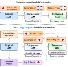
Figure 1. Standard compression (top) causes catastrophic perplexity degradation in non-English languages. LangCompress (bottom) uses language-aware calibration data and vocabulary simplification to maintain strong performance.
Method
Two complementary components address the data scarcity and vocabulary inefficiency that make existing compression methods struggle in non-English settings.
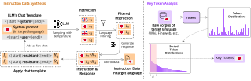
Figure 2. The full LangCompress pipeline. Left: iterative self-supervised instruction data synthesis with few-shot prompting and language filtering. Right: token-frequency analysis of a raw target-language corpus to identify key tokens and simplify the LM head.
Pruning requires recovery fine-tuning; quantization requires calibration data. Both assume high-quality instruction data exists in the target language — a scarce or impossible assumption for low-resource languages.
LangCompress uses the LLM itself as the data source. Starting from a system prompt in the target language, the model generates instructions via temperature sampling. A probabilistic N-gram language filter (lingua-py) retains only target-language outputs. The filtered instruction–response pairs are then appended as few-shot examples in the chat template, improving generation quality in each subsequent round. This loop continues until the desired number of samples is collected.
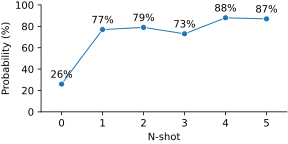
Figure 3. Probability of generating Japanese instructions vs. number of few-shot examples in the prompt (Llama-3-8B-Instruct). Adding just 10 examples stabilizes target-language generation.
Probabilistic N-gram detection (lingua-py) ensures only target-language instructions are kept.
Accepted pairs are added back as few-shot context, raising the language-generation probability each round.
The instruction data is generated from scratch using the model being compressed — no labeled corpus needed for this step.
Modern LLMs carry a vocabulary of 32K–152K tokens spanning dozens of languages. For a specific target language, the vast majority of these tokens are never used. LangCompress analyzes token frequencies in a raw target-language corpus (FineWeb2) and selects the top-$k$ most frequent tokens as key tokens. The LM head weight matrix $\mathbf{W}_{\text{LM}} \in \mathbb{R}^{|\mathcal{V}| \times d}$ is then reduced to $\widetilde{\mathbf{W}}_{\text{LM}} \in \mathbb{R}^{k \times d}$, retaining only the rows corresponding to these key tokens.
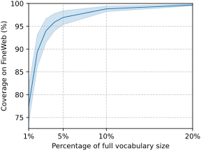
95% of target-language text" />Figure 4a. Coverage of the top 1%–20% tokens (FineWeb2, 6 languages). The top 5% covers >95% of target-language text.
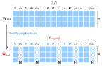
Figure 4b. The LM head $\widetilde{\mathbf{W}}_{\text{LM}}$ retains only the rows corresponding to the key token set $\mathcal{V}_{\text{simplify}}$, reducing the projection matrix from $|\mathcal{V}| \times d$ to $k \times d$.
The two components feed into standard compression pipelines without modifying the backbone algorithm: the synthesized dataset $\mathcal{D}$ replaces English calibration data, and the simplified LM head $\widetilde{\mathbf{W}}_{\text{LM}}$ replaces the original before compression.
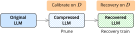
Pruning. $\mathcal{D}$ is used for calibration and recovery fine-tuning; $\widetilde{\mathbf{W}}_{\text{LM}}$ is substituted before pruning.
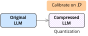
Quantization. $\mathcal{D}$ serves as calibration data for weight quantization; $\widetilde{\mathbf{W}}_{\text{LM}}$ is applied post-quantization.
Compatibility
LangCompress is method-agnostic. It enhances the calibration and recovery training stages of any existing compression technique by supplying target-language instruction data and a simplified LM head.
Post-training quantization using approximate second-order information. Weights compressed to 4-bit with LangCompress calibration data.
Activation-aware quantization preserving salient weights. LangCompress provides language-specific calibration to improve non-English accuracy.
2:4 sparsity pruning — the only scheme with real GPU speedup on NVIDIA hardware. LangCompress provides target-language calibration data.
Replaces weight matrices with smaller dense matrices via PCA-based slicing. LangCompress enables effective recovery training in the target language.
Gradient-based removal of coupled structures (attention heads, FFN channels). LangCompress provides target-language recovery fine-tuning data.
LangCompress is method-agnostic. Any compression technique that accepts calibration data or recovery fine-tuning can plug in directly — no changes to the core pipeline needed.
Tested on 6 model families: Llama-3-8B, Llama-3.1-8B, Llama-3-8B-Instruct, Llama-2-7B, Qwen2.5-7B, and Phi-3-mini-4k-instruct.
Results
Perplexity on target-language Wikitext (lower is better). Results on Llama-3-8B with LangCompress applied to three different compression methods.
Evaluated on Llama-3-8B across all five compression methods. LangCompress improves over the English-calibration baseline on every task — including translation and summarization, which standard compression methods often reduce to near-zero.
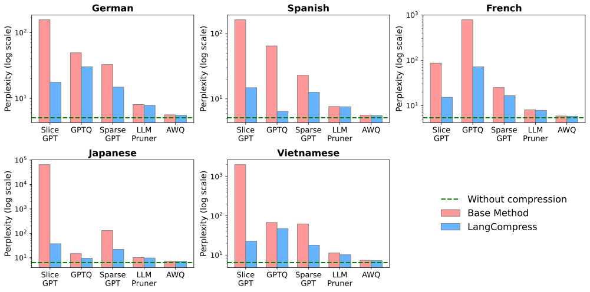
Perplexity (Wiki-text, lower is better). Consistent reduction across all methods and languages.
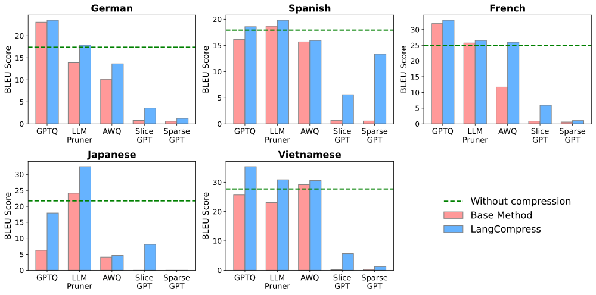
Translation (FLORES-200 BLEU, higher is better). Especially large gains for structured pruning, which degrades to near-zero without LangCompress.
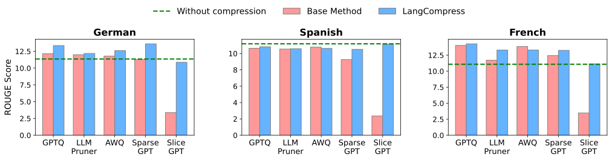
Summarization (MLSUM ROUGE-Lsum, higher is better). Stable improvements across languages and all compression methods.
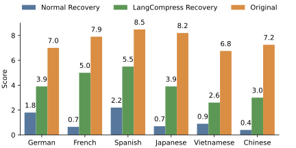
Instruction following (MT-Bench, GPT-judged, 0–10). LangCompress recovers multi-turn conversational ability after aggressive structured pruning.
LangCompress improves perplexity at every tested sparsity level for both LLM-Pruner (20%–50%) and SliceGPT (10%–50%) on Llama-3-8B. The gains become more pronounced at higher sparsity, where standard English calibration data is least effective.
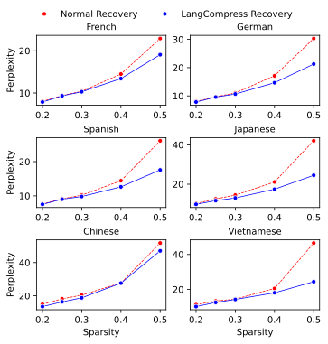
Figure 5. LLM-Pruner (20%–50% sparsity). LangCompress consistently reduces perplexity across all sparsity levels, with increasing gains at higher sparsity.
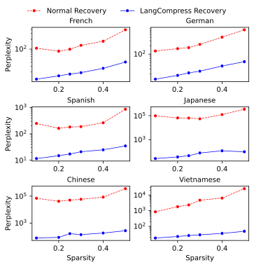
Figure 6. SliceGPT (10%–50% sparsity). LangCompress delivers substantial and stable gains at all sparsity settings.
LangCompress-generated instruction data outperforms both no-recovery and English-calibration baselines. Vocabulary simplification provides additional improvements on top of data synthesis alone. For quantization, using LangCompress instruction data also outperforms raw text corpora (e.g., C4) as calibration data.
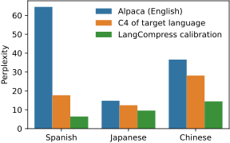
Figure 7. GPTQ calibration data comparison (Llama-3-8B). LangCompress instruction data consistently outperforms English data, multilingual data, and raw text.
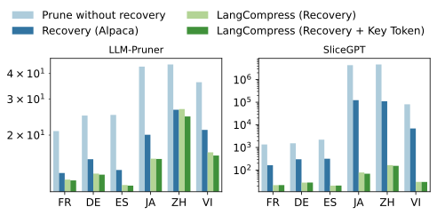
Figure 8. Pruning ablation (Llama-3-8B). Comparing: no recovery, English data (Alpaca), LangCompress data only, and LangCompress with vocabulary simplification (full method).
Vocabulary size 32K is the sweet spot: smaller vocabularies lose coverage and hurt performance; larger ones approach full-vocabulary cost with no quality gain. The optimal size is consistent across compression methods and languages.
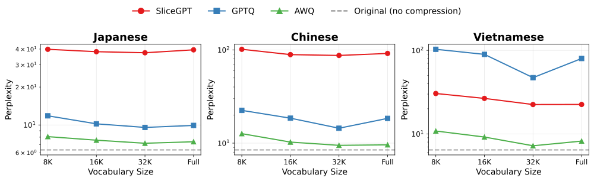
Figure 9. Perplexity vs. vocabulary size for three compression methods (Llama-3-8B). 32K tokens consistently achieves the best trade-off across JA, ZH, VI.
Beyond accuracy, vocabulary simplification directly reduces inference cost. At 32K tokens, the LM head runs 3.9× faster and uses 75% less memory. At 16K, speedup reaches 7.4× with 88% memory savings — measured on NVIDIA A100.
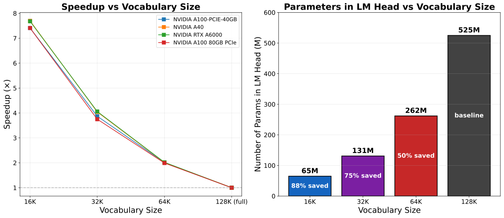
Figure 10. LM head inference time (ms) and parameter count at different vocabulary sizes (Llama-3-8B, NVIDIA A100). Consistent trend across A40, A6000, A100-80GB.
Citation
If you find LangCompress useful in your research, please cite our paper.
@inproceedings{nguyen-etal-2025-langcompress,
title = "{L}ang{C}ompress: Language-Aware Compression of Large Language Models",
author = "Nguyen, Dieu-Hien and
Le, Nguyen-Khang and
Do, Truong Dinh and
Nguyen, Le-Minh",
booktitle = "Proceedings of the 14th International Joint Conference on
Natural Language Processing and the 4th Conference of the
Asia-Pacific Chapter of the Association for Computational Linguistics",
month = dec,
year = "2025",
address = "Mumbai, India",
publisher = "The Asian Federation of Natural Language Processing and
The Association for Computational Linguistics",
pages = "2068--2077",
doi = "10.18653/v1/2025.ijcnlp-long.112"
}